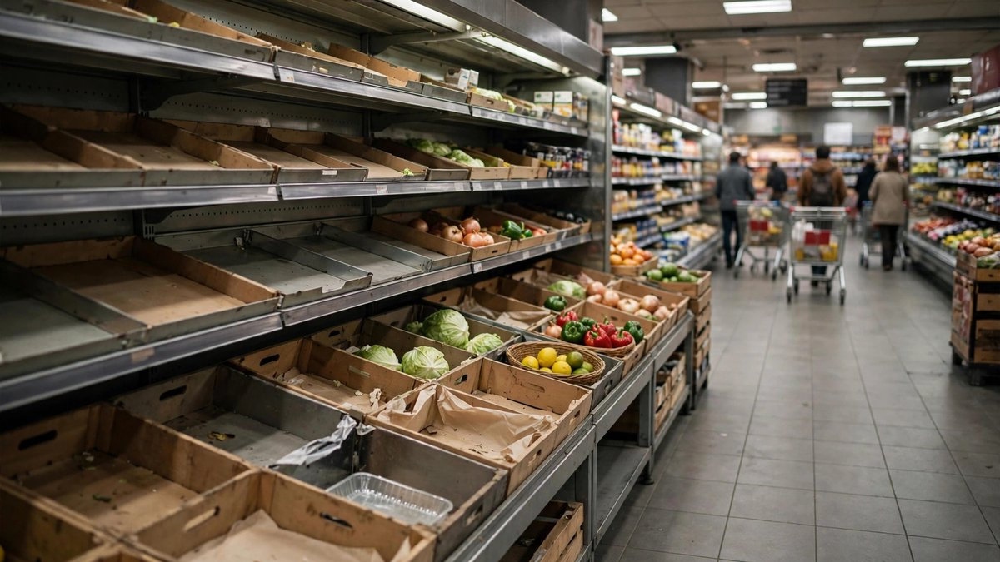

Les sites d'Ahold restent hors ligne un cinquième jour après un incident cyber
Les sites et applications de Stop & Shop, Giant Food, Hannaford et Food Lion restaient en panne vendredi pendant que les magasins restaient ouverts. Giant a offert 10 pour cent de remise en magasin, et un ministre néerlandais a demandé à Ahold une plainte pénale.

Points clés
- Mis à jour à 09:02 UTC, le 19 octobre 2026.
- AMSTERDAM.
- La coupure a commencé le 11 octobre.
Mis à jour à 09:02 UTC, le 19 octobre 2026. Albert Heijn ne reprendra pas les livraisons en ligne avant jeudi au plus tôt, selon un message dans son application lundi, a rapporté Reuters. La coupure dure donc au moins 11 jours. Les sites web et les services de livraison des chaînes Ahold Delhaize aux Pays-Bas et aux États-Unis sont restés hors ligne lundi, une semaine après que le groupe a arrêté certains de ses propres systèmes après un incident de cybersécurité. Les livraisons de la chaîne belge Delhaize ont repris pendant le week-end. Ahold a dit vendredi travailler à une relance contrôlée de plusieurs systèmes. Le groupe n'a pas donné de détails sur l'incident, en disant que son enquête se poursuit, et il a dit qu'il n'y avait aucune preuve que des données de clients aient été volées. Les magasins physiques sont restés ouverts, mais les problèmes d'approvisionnement ont continué là où les systèmes de distribution étaient touchés.
AMSTERDAM. Les sites web et les applications des chaînes de supermarchés d'Ahold Delhaize sont restés hors ligne un cinquième jour vendredi 16 octobre, après ce que l'entreprise appelle un incident de cybersécurité. Les magasins sont restés ouverts. Les rayons en Europe se remplissaient de nouveau. Les achats en ligne n'étaient pas revenus.
La coupure a commencé le 11 octobre. Ahold Delhaize a dit lundi 12 octobre qu'un incident de cybersécurité l'avait conduit à mettre certains systèmes hors ligne pour les protéger. Aux États-Unis, les enseignes touchées sont Stop & Shop, Giant Food, Hannaford et Food Lion, ensemble l'un des plus grands vendeurs d'alimentation du pays. En Europe, l'incident a touché Albert Heijn, Delhaize, Etos, Gall & Gall et bol.com.
Ce que les clients ont trouvé vendredi
Aux États-Unis, le site de Stop & Shop affichait vendredi un avis sur l'interruption. Il disait que l'entreprise travaillait à rétablir le service aussi vite que possible, et dirigeait les clients vers DoorDash, Instacart et Uber Eats pour les commandes en ligne. Les magasins physiques, les pharmacies et les stations service sont restés ouverts, et l'entreprise a dit qu'elle rembourserait les commandes numériques passées mais non traitées.
Giant Food a agi pour adoucir le coup. Les clients de ses 168 magasins en Pennsylvanie et dans les États voisins ont reçu vendredi un courriel avec un coupon de 10 pour cent de remise sur un achat en magasin jusqu'au 22 octobre. La remise est plafonnée à 10 dollars et limitée à une par foyer. Pour les commandes en ligne par des partenaires de livraison, Giant a offert 15 dollars de remise sur une commande de 75 dollars ou plus jusqu'au 19 octobre. Une porte-parole, Ashley Flower, a dit que les magasins reçoivent toujours des livraisons, que tous les coupons numériques du nouveau prospectus hebdomadaire ont été activés automatiquement, et que les porteurs de la carte Giant peuvent toujours gagner et utiliser des points en caisse.
En Europe, le rétablissement était plus avancé en magasin qu'en ligne. RetailDetail a rapporté vendredi que les propriétaires de magasins Delhaize peuvent de nouveau passer des commandes, par une solution de contournement, après des jours où les magasins ont été approvisionnés à partir des estimations de la chaîne elle même. Les magasins Albert Heijn reçoivent de nouveau des livraisons normales, et les rayons se remplissent. La boutique en ligne d'Albert Heijn ne reprendra pas avant la semaine prochaine au plus tôt, et les commandes déjà passées pour une livraison jusqu'au dimanche 18 octobre ont été annulées, avec des remboursements promis dès que les systèmes le permettront.
Ce que dit l'entreprise, et ce qu'elle ne dira pas
Ahold Delhaize a dit dans sa mise à jour du mardi 13 octobre qu'il n'y avait aucune preuve que des données de clients, d'employés ou de partenaires aient été prises. Sa déclaration complète la plus récente, le 14 octobre, disait qu'elle travaille avec des équipes internes et des experts externes en cybersécurité, et qu'elle est en contact avec les autorités. Elle a dit qu'elle ne pouvait pas partager de détails pendant l'enquête, pour ne pas affaiblir sa propre sécurité ni sa réponse.
Ce silence a attiré une pression publique vendredi. Le ministre néerlandais de la Justice, David van Weel, a appelé l'entreprise à déposer une plainte pénale au sujet de l'incident, a rapporté Reuters. Le ministre a parlé à l'agence de presse néerlandaise ANP. Un porte-parole d'Ahold a dit que l'entreprise ne pouvait pas répondre aux remarques du ministre et a renvoyé les journalistes à la déclaration du 14 octobre. Ahold a évité de décrire l'incident comme un piratage.
Supermarket News a noté que c'est la deuxième grande cyberattaque contre Ahold Delhaize en deux ans.
Pourquoi cela compte
Les supermarchés tournent avec de fines marges et des livraisons quotidiennes. Quand les systèmes de commande tombent, les magasins devinent les stocks, les rayons de frais se vident en premier, et les clients en ligne disparaissent pour la semaine. Les chaînes d'Ahold nourrissent des millions de foyers sur deux continents. Cinq jours hors ligne suffisent à pousser les clients vers les concurrents, et les remises offertes par Giant vendredi montrent que l'entreprise le sait.
Et ensuite
Les tests sont maintenant simples. Albert Heijn dit que la livraison en ligne ne reprendra pas avant dimanche, et sa propre mise à jour pointe vers la semaine prochaine. Delhaize attend une capacité de commerce en ligne à des niveaux normaux dès ce week-end. Aux États-Unis, les enseignes n'ont donné aucune date pour le retour de leurs sites et applications. Jusqu'à leur retour, chaque jour ajoute des remboursements, des remises et des commandes en ligne perdues à la facture d'un incident que l'entreprise ne décrira toujours pas en détail.
Chronologie
- Oct 11, 2026La coupure a commencé après un incident de cybersécurité. Ahold Delhaize a mis certains systèmes hors ligne pour les protéger.
- Oct 12, 2026Ahold Delhaize a annoncé le problème de cybersécurité en public. Les sites et applications de ses chaînes aux États-Unis et en Europe étaient en panne.
- Oct 14, 2026L'entreprise a publié sa déclaration complète la plus récente, en disant qu'elle travaillait avec des équipes internes et des experts externes en cybersécurité.
- Oct 16, 2026Cinquième jour de la coupure. Giant Food a offert des remises aux États-Unis, les propriétaires Delhaize ont pu commander de nouveau en Belgique, et le ministre néerlandais de la Justice a demandé une plainte pénale.
- Oct 18, 2026Albert Heijn ne s'attend pas à ce que la livraison en ligne reprenne avant ce dimanche. Les commandes de livraison jusqu'à cette date ont été annulées.
- Oct 19, 2026Albert Heijn a dit que les livraisons en ligne ne reprendront pas avant jeudi au plus tôt, ce qui porte la coupure à au moins 11 jours. Les livraisons Delhaize en Belgique ont repris pendant le week-end, tandis que les chaînes néerlandaises et américaines sont restées hors ligne.
Sources
- Reuters via WIXX: Supermarket operator Ahold's websites, app remain offline 5 days after cyber incident
- Supermarket News: Ahold Delhaize's web shutdown enters fifth day
- RetailDetail: Delhaize and Albert Heijn store shelves are being restocked
- York Daily Record: Giant shoppers can get 10% off groceries as cybersecurity issue continues
- Reuters: Albert Heijn online deliveries to stay offline until at least Thursday after cyber incident